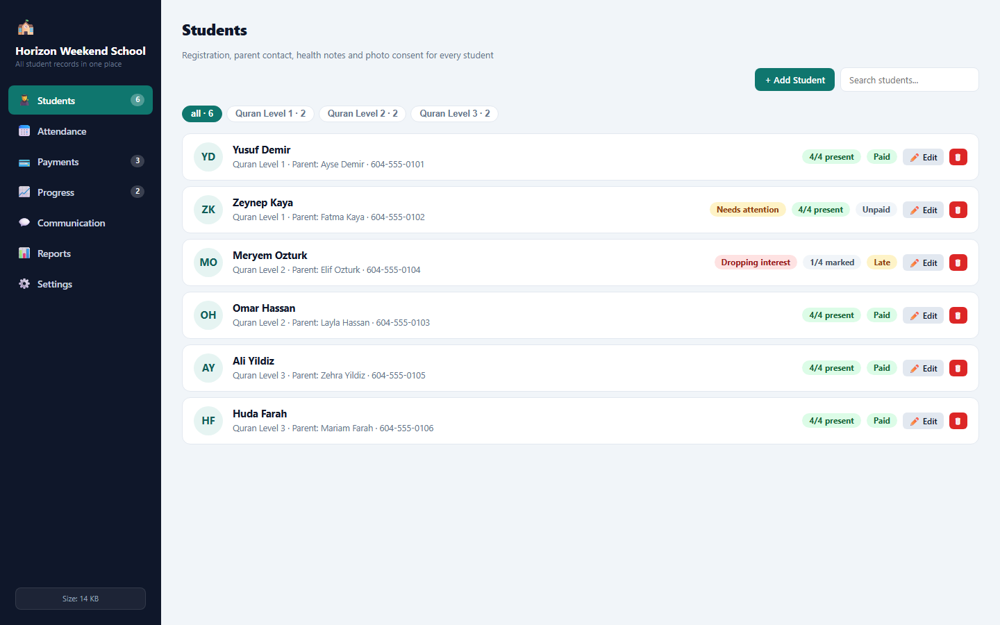
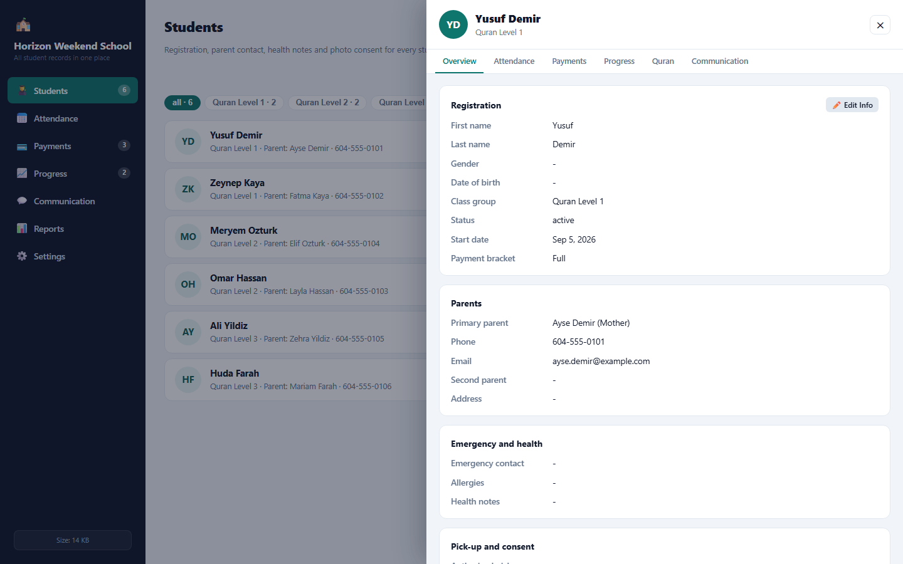

Registration, attendance, payments, Quran progress, parent communication and meeting reports - in one tool that autosaves everything your school does in a week.
From the first registration to the monthly parent meeting.
Registration, parent contacts, health notes, photo consent and signed forms stay together for every child.
One grid per Sunday with P, A, L, E marks per lesson, bulk buttons and a week-completion check.
Every unpaid month appears in one waiting list with due dates - and a polite reminder builds itself.
Reading level with history, memorized surahs with status and the next target - shared with parents in one message.
Group messages, one-on-one feedback, absence calls and suggestions stay searchable all year.
Weekly and monthly summaries in English or Turkish - copy, download or print for the parent meeting.

The Students page shows each child with their group, last Sunday attendance, this month payment and any flags that need attention.

Open a student to see registration, parents, health, pick-up and consent, uploaded forms, attendance, payments, progress and Quran tracking in one drawer.
One tool instance per school - no new system to learn.
Name the school, add class groups, lessons and payment brackets in Settings.
Register each child with parents, contacts and health notes - the form takes one minute per student.
Mark attendance on Sunday, follow up payments, message parents and print the report for the meeting.
One place for the whole school record.
| The usual way | Weekend School Manager | |
|---|---|---|
| Attendance | ✕ Paper sign-in sheets counted by hand | ✓ One grid per Sunday, counted automatically |
| Payments | ✕ A notebook with no follow-up list | ✓ A waiting list with due dates and ready reminders |
| Reports | ✕ Assembled the night before the meeting | ✓ Weekly and monthly summaries in one click |
"The monthly meeting report used to take an evening of counting - now it is one button."
Weekend school coordinator"Parents finally hear about Quran progress with real details instead of 'he is doing fine'."
Quran teacher"Late payment reminders are polite, in both languages, and nobody slips through anymore."
School administratorYes - students, attendance, payments, progress, communication and reports all live in one tool instance per school. Teachers and coordinators share it through the CMS with their own roles.
Yes - the pages adapt to a phone screen, and copied messages and images are ready to paste straight into WhatsApp.
The tool shows a live size meter with warnings long before the storage limit, and a one-click export keeps a backup of all records as a file.
Browse real screenshots of Weekend School Manager with sample data - click any image to open it full size.
Screenshots show the tool with mock data - the real tool connects to your own account. Get Weekend School Manager
Registration to meeting report - with every record saved as it happens.
Get Weekend School Manager